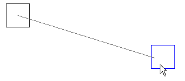
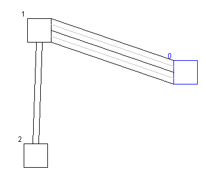

1. Editor
2. Simulator
3. Evaluation Tools
4. An Example Session
 a. Map Creation
a. Map Creation
 b. Traffic Simulation
b. Traffic Simulation
 c. Statistics Evaluation
c. Statistics Evaluation
5. Algorithms
An example of how to create a GLD Map
Let's make a map from scratch to get to know GLD's editor.
- First off, start the GLD Editor.
- Currently, you have the Zoom Tool selected, which has little use, as nothing is shown in the view.
Let's start by making a simple map: select the Node Tool from the Toolbar.
- You will see the Tool Box appear next to the Tool drop-down box. It currently reads "Traffic Lights", meaning the Node you may create next will be a standard junction.
- Click with the left mouse button somewhere in the view to create a Junction Node.
Don't worry, it doesn't matter if you click in a corner, maps are practically infinitely scrollable in GLD.
- You will now see a square representing your Junction Node appear.
Now, a Node by itself is no use, so we are going to make a few others.
Click a few more times to make other Nodes. Now select "Edge Node" from the Tool Specific Box and
click a few times to make some Edge Nodes. These will be the only ones that will spawn
Road Users in the simulation. It is meaningful to put them on the edges of your map for now.
- Now, select the Road Tool from the toolbar. Drag from one Node to another: a temporary line will be shown to indicate placement.
End drag on a target Node. A standard Road will appear, with 2 lanes per direction.

Also, Traffic Lights will be visible on their corresponding locations at the end of a lane. experiment with the Tool Configuration to make Roads with more or less lanes, and also play with the direction rules. As you add roads between your Nodes some Traffic Lights will change from green to red, indicating the standard relation of control in your current infrastructure. Keep in mind that Edge Nodes can have only one outgoing Road.

- Now it is time to check you map for inconsistency. This can be left to the Validation that, after you have saved a map in the Editor, signals errors in the connections between Nodes and Roads.
We can also alter an existing map, which requires less work, but more minute orientation in its infrastructure.
- Open map called "Complex".
- Scroll and zoom about a bit to get to know it.
- Now, go to the center of the map.
- Delete edge node 0 and replace it with a junction.
- Extend junctions 8 and 9 with junctions and roads (9 can only be extended westwards and 8 northwards)
- Link the extended junctions to new edge nodes.
- You've now extended a previously saved map, on which you could run a simulation and compare statistics.
We have a map now, and we can move on to running a simulation on it.